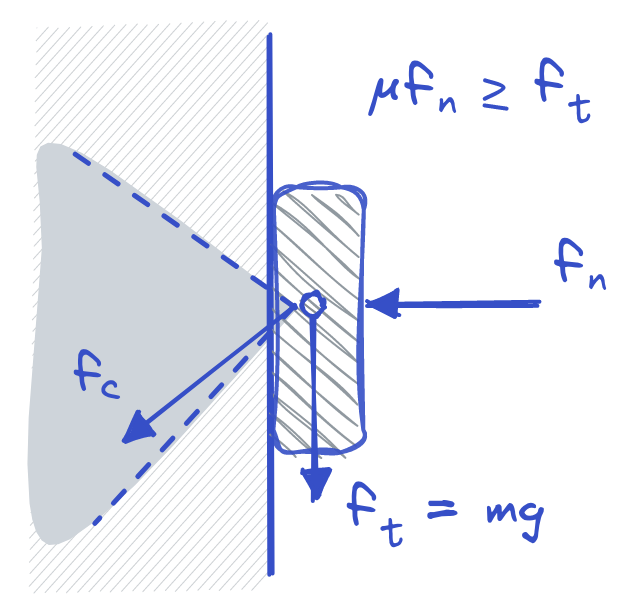
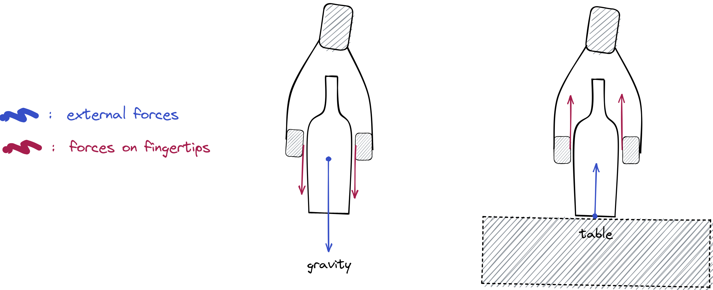
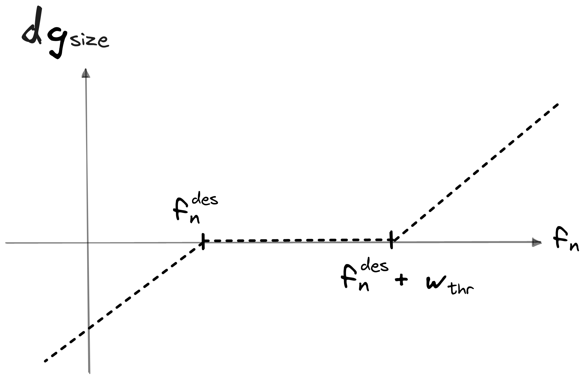
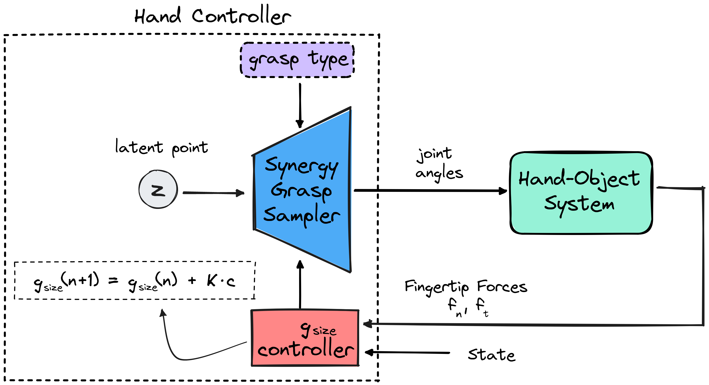
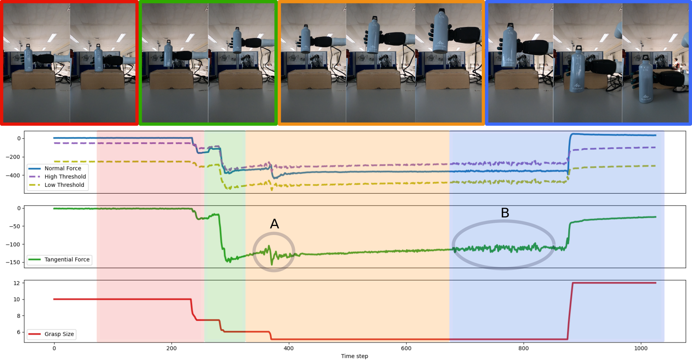

Conditional Postural Synergies II: Force feedback control
In the previous post, I presented a framework for efficiently controlling
a humanoid robotic hand in the synergy space. However, the previous approach
relies only on position control of the fingers without taking into account
any feedback information from the environment, preventing the ability to
react to external disturbances and uncertainties. In contrast, humans heavily
rely on tactile feedback, provided by tactile afferents located on the hand’s
skin to perform complex manipulation tasks that involve contact interactions
(Flanagan et al. 2006,
Johansson et al. 2009).
In this post, I will present our approach to incorporate tactile feedback into
the synergy framework that we developed previously and design a force controller
for a multi-fingered robotic hand. The objective of the proposed controller is
to stabilize objects during lifting and transporting as well as detect when to
release them when placing or during handovers based on a simple heuristic.
Background#
Existing approaches that utilize tactile sensors to modulate finger
control during grasping, primarily rely on slip prediction algorithms
(Su et al. 2015,
Viega et al. 2018).
These algorithms process force signals from the tactile sensors and
employ modern machine learning techniques, such as neural networks, to
predict slip occurrence. The predicted slip information is then utilized
to determine the desired normal forces required to prevent slippage.
Subsequently, each finger is commanded individually to apply the target
forces accordingly. However, the development of such algorithms typically
requires labeled datasets and is often constrained to specific objects
and hand orientations. Moreover, most proposed controllers focus solely
on either grasping or releasing objects, lacking the capability to
perform both tasks within a unified architecture.
In our approach (Dimou et al. 2022), we do not attempt to detect slippage, instead, we focus on
contact modeling and parameter tuning such that we do not have slip We
model the contact mechanics using Coulomb's friction law. In general
Coulomb's friction law states that the force of friction between two
surfaces is proportional to the normal force pressing the surfaces times
their friction coefficient. In our case, we want the fingers to press the
object to avoid slipping due to gravity.

Let's take for example the situation shown in the Figure above where an object is pressed against the wall with a force $f_n$ normal to the wall. Gravity is pulling the object towards the earth with a force tangential to the wall $f_t = mg$. For the object to not slip on the wall's surface, the normal force needs to be: $$f_n \geq \frac{f_t}{\mu} $$ So when grasping an object and trying to avoid slip we will need the normal forces applied by the fingers to be higher than the force of gravity.
Force Control using Synergies#
Our objective is to design a controller capable of grasping objects in a
manner that allows for lifting without slippage, while also being
adaptable to external disturbances and capable of releasing the object
when necessary. The key idea behind our approach stems from the
observation that, when an object is lifted, there is an external force
pulling it towards the ground due to gravity, resulting in net forces on
the fingertips that are directed downward. Conversely, when the object is
placed on a supporting surface, e.g. a table, there is an external force
pushing the object upward, as visualized in the Figure below. Building on
this assumption, our objective is to design a controller that can switch
between two distinct states: grasping and releasing, based on the
direction of the external forces.
To accomplish this, we will utilize the grasp size variable $g_{size}$ to
dynamically adjust the openness or closeness of the grasp as needed. The
grasp size represents the distance between the thumb tip and the
index fingertip in a grasp. When the grasp size decreases the normal
force applied to the surface of the object increases, since the fingers
move closer. The target grasp size, along with the desired grasp type,
will serve as inputs to a CVAE model, conditioned on grasp type and grasp
size, which will generate the corresponding grasp posture. The
calculation of the target grasp size is based on the desired normal force
$f_n^{des}$, that we intend the robotic hand to exert on the object and
the currently applied normal force.

Grasping#
In the GRASP state, our main goal during lifting and transporting
is to avoid object slip. Let's imagine a hypothetical scenario, in which
we have an object in a fixed position, we have a grasp pose for the hand,
and we want to lift the object. Thinking about it step by step, when the
hand reaches the target grasp pose we want the hand to start closing its
fingers until they come in contact with the objects surface. So, in the
beginning, the desired normal force takes a small value $f_n^
{offset}$, and the grasp size is reduced until it is achieved and we
ensure contact with the object. According to our contact modeling, in
order to avoid slip when lifting or holding the object, we want the
applied normal force to be equal to a gain $G$ times the tangential force
$f_t$. So, the final desired normal force $f_n^{des}$ during grasping is
the following:
$$ f_n^{des} = G \cdot f_t + f_n^{offset}$$
The applied normal force is controlled using the grasp size variable.
Basically, when the applied normal force is lower than the applied one
the desired grasp size is reduced to tighten the grip, and when it is
higher the grasp size is reduced. Because the force readings from the
sensors are noisy and can result in oscillations in the grasp size which
might cause instability of the object, instead of using the desired
normal force as a reference signal, we define a range of values that we
want it to be inside. We define a low threshold $f_n^{low} = f_n^{des} $
and a high threshold $f_n^{high} = f_n^{des} + w_{thr}$, where $w_
{thr}$ is the width of the range. The high threshold helps to prevent
the robot from applying too much force and potentially damaging the
hardware or the object.
After we compute the range for the desired normal force
we can calculate if the actual measured normal
force $f_n$ from the fingertip sensors is inside that
range and we can compute the difference with respect to
the desired range's limits $df_n^{low} = f_n^{low} - f_n$
and $df_n^{high} = f_n^{high} - f_n$.
The difference $df_n^{low}$ is greater than zero when the applied
force is below the desired one. In this case, we want the grasp
size to decrease in order to apply greater force.
The difference $df_n^{high}$ is greater than zero when the applied
force is above the high threshold. In this case, we want the
grasp size to increase in order to apply less force.
So the grasp size $g_{size}$ is calculated using the following
equation:
$$
g_{size} (n + 1) = g_{size} (n) + K \cdot
(\Bbb{1}_{df_n^{low} > 0} \cdot df_n^{low} -
\Bbb{1}_{df_n^{high} > 0} \cdot df_n^{high})
$$
where $K$ is a parameter that defines the rate of change of the grasp
size, i.e. how fast the hand closes and opens, and is determined
experimentally. The Figure below shows the change the change of
the grasp size $dg_{size} = g_{size}(n+1) - g_{size} (n)$,
as a function of measured normal force $f_n$.

Releasing#
The robot enters the RELEASE state when it detects that the object is in
contact with a support surface, such as a table, or during a handover
when someone is pulling the object away. When the object is held in the
air, the only external force acting on it is gravity, which pulls it
downwards towards the ground. On the other hand, if the object is placed
on a support surface, the force of gravity is countered by the support
surface, resulting in a net upward external force. Using the tactile
reading, the robot can detect the direction of the applied force on the
object and determine whether it should release the object or maintain the
grasp.
To determine whether the net tangential force on the object is due to
gravity or a support surface, we transform the force readings from the
fingertips into the world coordinate frame, using the world pose of the
hand. We can then compare the direction of the net tangential force with
the direction of gravity to determine if the robot should enter the
releasing state. If the angle between the net tangential force vector and
the gravity vector is less than 90 degrees, it indicates that the force
is directed towards the ground, suggesting that the tangential force is
primarily due to gravity pulling the object. In this case, the controller
remains in the grasping mode. Conversely, if the angle between the net
tangential force vector and the gravity vector exceeds 90 degrees, it
implies that the force is directed upwards. This suggests the presence of
a support surface pushing the object or someone pulling it from above,
triggering the releasing mode of the controller.
In the RELEASE state, the controller increases the grasp size
proportionally to measured the normal force until it does not apply any
force to it. The control law for the grasp size in this case is the
following:
$$ g_{size} (n + 1) = g_{size} (n) + K \cdot f_n$$
Final Controller#
During testing, we assume that a trajectory for the robotic arm, consisting of waypoints, is provided to the robot. As the robot follows the trajectory, it enters the GRASP state once it reaches the target grasp pose. The hand starts in an open pre-grasp position. An initial grasp posture is generated by sampling a latent point from the CVAE’s prior distribution, together with the desired grasp type and size. The grasp controller then, gradually reduces the grasp size until the first contact with the object is made. The grasp size is subsequently adjusted to apply the target normal force. Once the robot detects that the tangential force is pointing upwards, indicating the need to release the object, the robot enters the RELEASE state. It ceases further movement and the hand initiates the release process by increasing the grasp size, thereby opening the grasp.

Experiments#
In our experiments, we used the Seed Robotics RH8D hand, a humanoid robotic hand with 7 degrees of freedom (DoFs), mounted on a Kinova Kortex Gen3 robot arm. The hand is equipped with the FTS-3 force sensors in each fingertip, which provide the 3D force applied in the coordinate frame of the fingertip. In the Figure below, you can see the execution of one of our experiments. Under the pictures of the execution, you can see the signals recorded by the controller: the average normal force applied by all fingers (blue line), the thresholds that we want the normal force to be below (purple dashed line) and above (yellow dashed line), which are functions of the tangential force, the average tangential force (green), and the grasp size used to generate the grasp posture in each time-step (red).

The task is divided into four stages: 1)(red part) the initial grasp of the object when it is on the box, in this stage the force controller closes the grasp until the applied normal force is below only the offset $f_n^ {offset}$, 2) (green part) the robot tries to lift the object, and as it tries to lift the tangential force increases, increasing the threshold, so the grasp size decreases to apply more normal force, 3) (orange part) the robot transports the object, you can see, in point A in the Figure, a perturbation in the tangential force when the robot begins to move, the controller responds by decreasing the grasp thus stabilizing more the object, and 4) (blue part) the robot enters the releasing phase, where it lowers the arm until it detects that the tangential force is coming from a support surface, in that moment it stops lowering the arm and increases the grasp size slowly releasing the object. In point B in the Figure, you can see that there is noise in the tangential force, due to the arm moving to place the object on the table, which is also reflected in the desired normal force. Because we use the desired normal force as a threshold and not as a reference signal this noise is not manifested in the control of the grasp size. In the Figures below you can see some more demos of our algorithm.


Conclusion#
In summary, in this work, we developed a force controller that uses the postural synergies framework to execute several grasping and releasing tasks. The controller determines a target grasp size, based on tactile feedback, which is used by a CVAE model to generate corresponding grasp postures. The main advantages of our method is that we can execute several grasp types just by changing one value, we do not need slip detection, and we can perform both grasping and releasing tasks. However, our current approach does not account for rotational forces applied to the object. This could be addressed using visual input to track the pose of the object and detect pose changes that might indicate external rotational forces.
References#
[1] Flanagan et al. “Control strategies in object manipulation tasks.” Current Opinion in Neurobiology, 2006.[2] Johansson et al. “Coding and use of tactile signals from the fingertips in object manipulation tasks.” Nature Reviews Neuroscience, 2009.
[3] Su et al. “Force estimation and slip detection/classification for grip control using a biomimetic tactile sensor.” Humanoids, 2015.
[4] Veiga et al. “In-Hand Object Stabilization by Independent Finger Control.” ArXiv, 2018.
[5] Dimou et al. "Force Feedback Control For Dexterous Robotic Hands Using Conditional Postural Synergies," Humanoids, 2022.